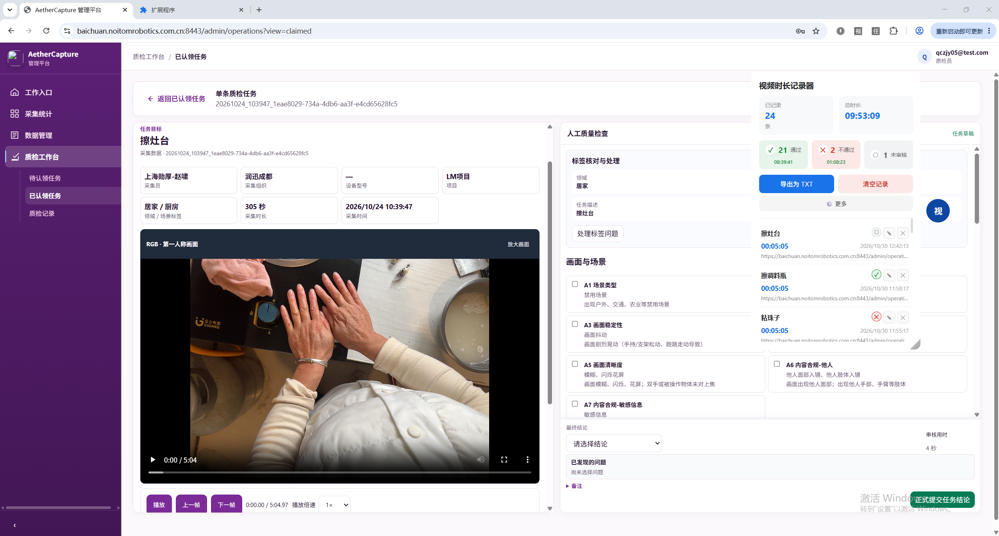
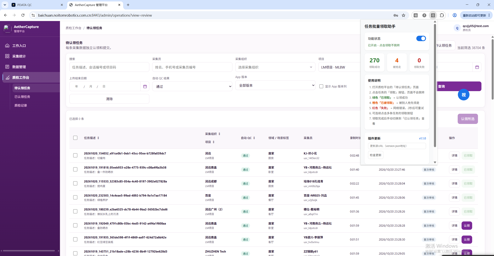
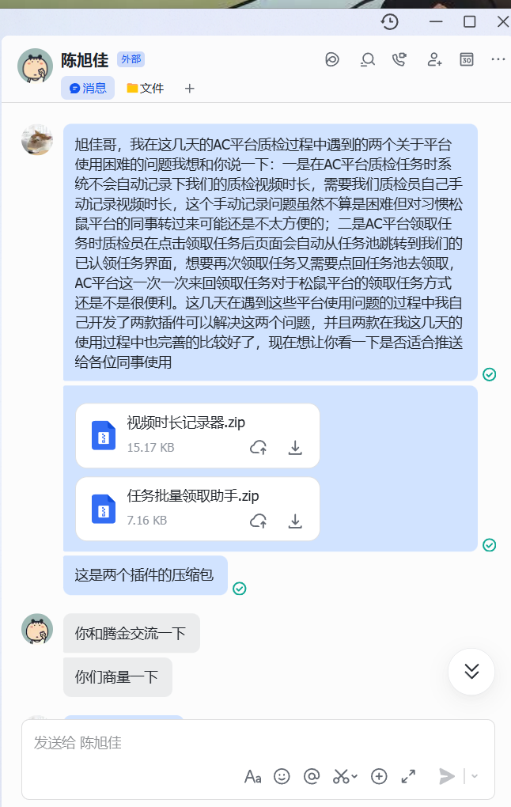
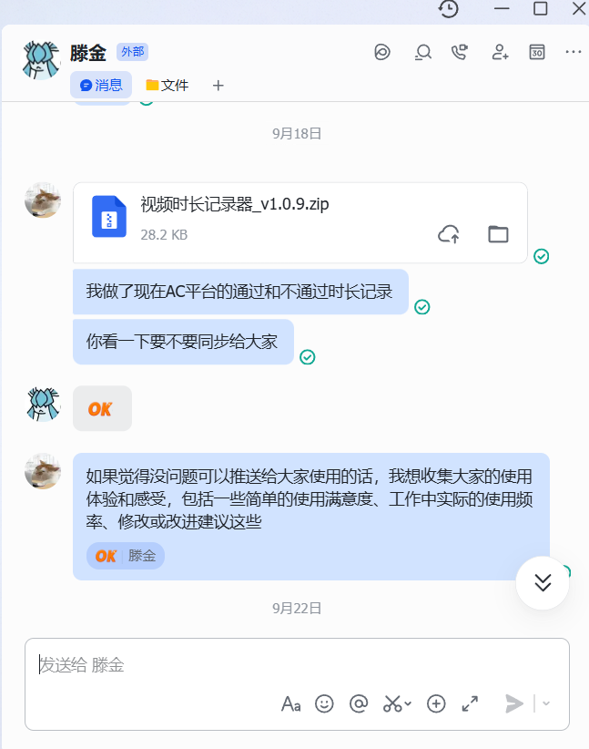
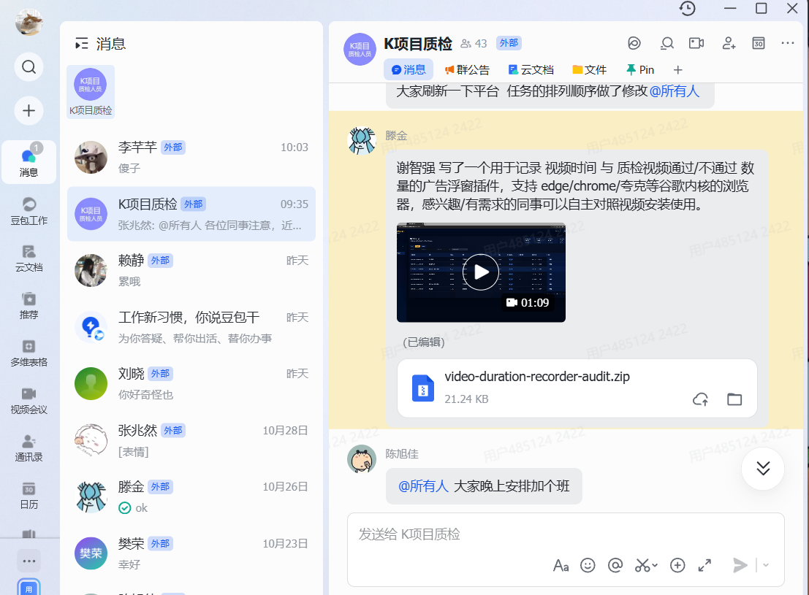
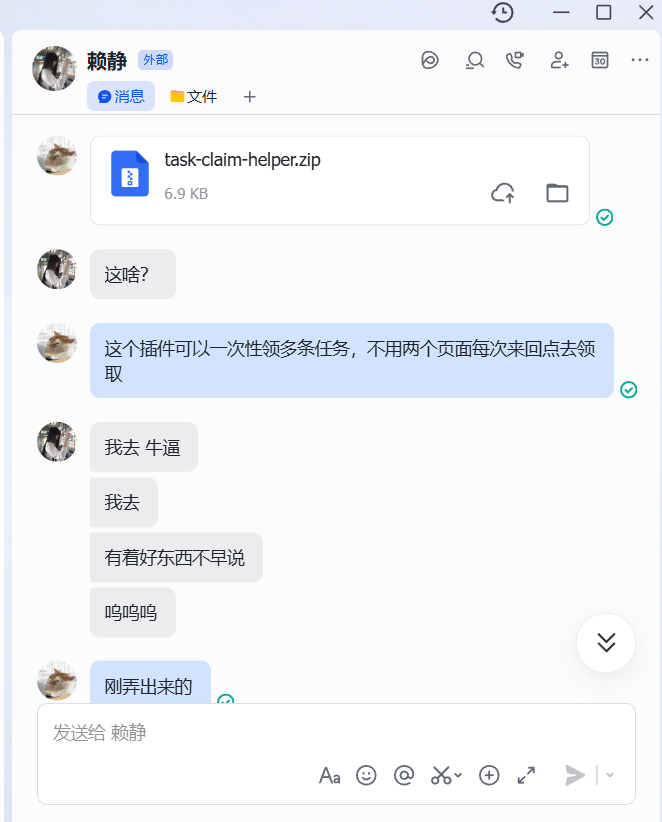
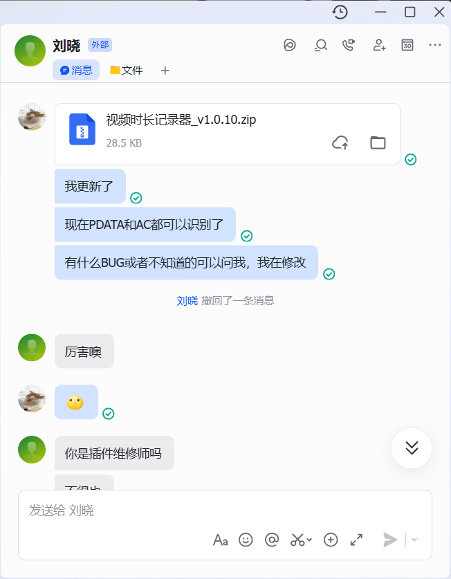
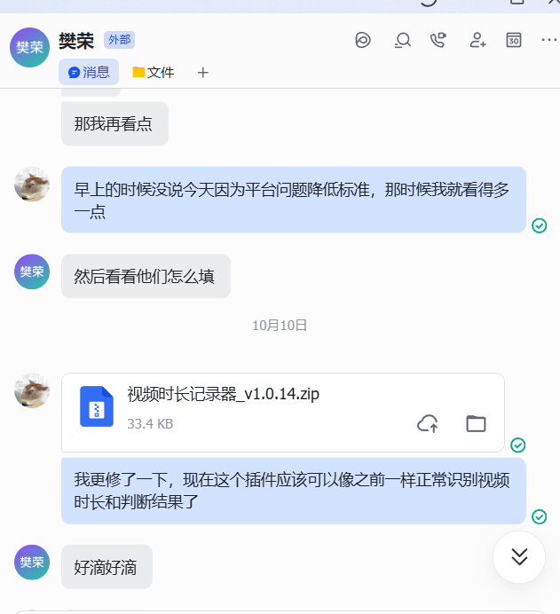

从一线质检员到产品开发者：发现日常工作中的效率痛点，独立设计并开发浏览器插件工具，覆盖整个质检团队
痛点1：手动记录视频时长
质检员每条视频都需要手动记录时长，一天下来容易漏记、记错，统计总时长还要手动加总，浪费大量时间。
痛点2：任务领取需要来回切页面
在待认领任务池点"认领"后，页面会自动跳转到"已认领"页面，要领下一条就得切回去再点，来回切换效率很低。
痛点3：平台迁移后工具失效
公司从PDATA平台迁移到AC平台后，页面结构完全变了，原来的工具都不能用了，需要重新适配。

自动识别质检页面正在播放的视频时长，自动关联质检结果（通过/不通过），悬浮球面板实时展示统计数据，一键导出TXT。

在待认领任务池页面点击"认领"后不再跳转，按钮直接变成"已领取"状态，支持连续快速领取多条任务，面板实时统计领取成功/失败次数。
工具不是做完就完事了——从自己用，到找组长审核，再到小范围试用、全组推广，每一步都有真实的用户反馈和迭代优化。






在一线质检工作中发现效率问题
用AI辅助开发工具，自己测试验证
提交组长评估，确认无风险后推广
先给几个同事用，收集问题再优化
群里正式发布，持续维护更新
这不是一个程序员的项目，而是一个一线质检员因为每天手动记录时长、来回切页面领任务太麻烦，自己想办法解决问题的故事。
从发现问题 → 写PRD → 开发 → 找领导审批 → 推广给同事 → 收集反馈 → 持续迭代，完整走了一遍产品经理的工作流程。
过程中经历了平台迁移、页面结构变化、同事反馈各种bug，前前后后迭代了14个版本，工具从自己一个人用，变成了整个质检团队都在用的效率助手。